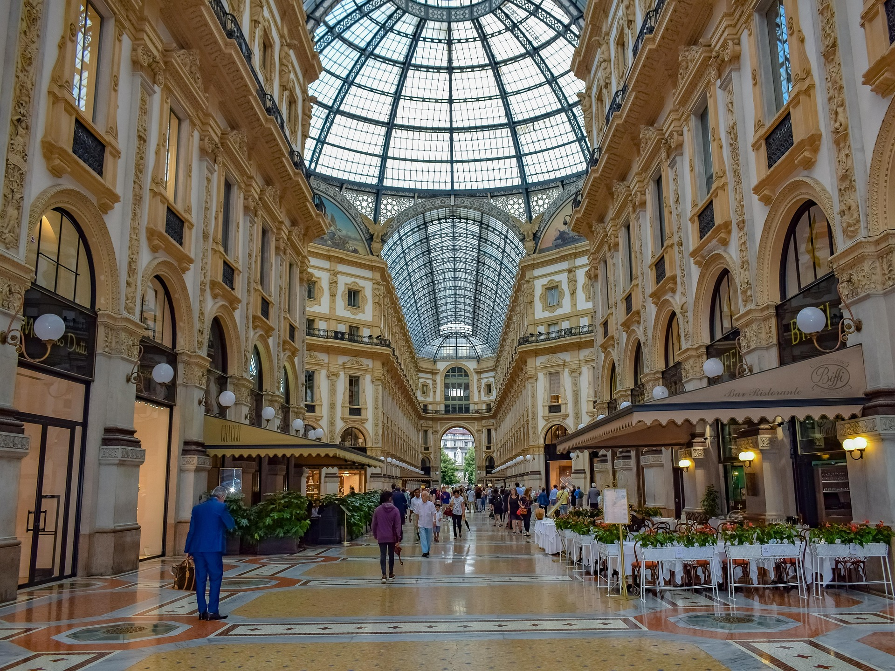
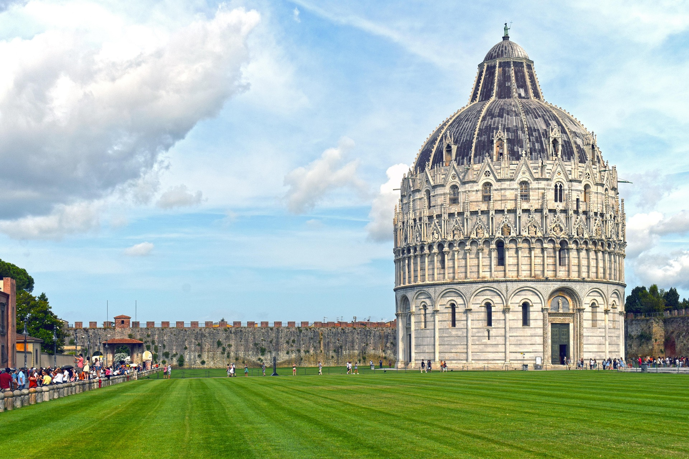

Conoce algunas ciudades de Italia y sus atracciones turísticas.
Roma
Roma la capital de Italia es una visita obligatoria para cualquier viajero que recorra
el país, debido a su importancia histórica recorrerla es recorrer gran parte de la historia de
la humanidad gracias a sus reliquias arquitectónicas.
Lugares interesantes de Roma.
Coliseo RomanoFontana di TreviEl Foro romano
Florencia
Florencia es la cuna del arte renacentista y neoclásico, fue un importante bastión
cultural y político durante el renacimiento, por lo cual es una ciudad primordial para los
amantes del arte con sus estructurar y museos que rememoran el recentismo.
Lugares interesantes de Florencia.
Galería UffiziPalazzo PittiPiazzale Michelangelo
Venecia
Venecia es una ciudad construida sobre islas interconectadas, dando a lugar a sus
famosos canales por donde se dan los paseos en góndolas, aunque este no es el único de sus
atractivos también cuenta con importantes obras arquitectónicas y vistas increíbles.
Lugares interesantes de Venecia.
Piazza San MarcoIsla de BuranoEl Gran Canal
Milán
Milán es una parada obligatoria para cualquier amante de la moda, donde nacieron las
grandes marcas como Armani, Versace entre otras, también cuenta con la Milán fashion week uno de
los eventos de moda más importantes del mundo, además de esto también cuenta con una gastronomía
sorprendente.
Lugares interesantes de Milán.
La catedral de MilánTeatro alla Scala

Galería Vittorio Emanuele II
Nápoles
Nápoles tiene una rica historia futbolística y alberga una gran variedad de sitios
culturales e históricos que la convierten en un destino muy atractivo. Destacan especialmente
sus catacumbas subterráneas, que parecen formar una ciudad bajo la ciudad.
Lugares interesantes de Nápoles.
Catacumbas de San GennaroPompeyaEstadio Giuseppe Meazza
Pisa
Pisa a pesar de ser reconocida mayoritariamente por su torre inclinada, cuenta con
muchas otras atracciones que resultan interesantes y atractivos para disfrutar durante la
estadía en la ciudad.
Lugares interesantes de Pisa.
Torre Inclinada de PisaDuomo di Pisa

El battistero di San Giovanni
Verona
Verona es un recorrido por el antiguo imperio romano y además esta fuertemente ligada al
arte siendo el escenario donde William Shakespeare baso su obra Romeo y Julieta.
Lugares interesantes de Verona.
Piazza delle ErbeArena de VeronaBalcón de Julieta
Siena
Siena es una joya del arte y la arquitectura medieval, con imponentes torres, elegantes
construcciones.
Lugares interesantes de Siena.
Torre del MangiaPiazza del CampoDuomo di Siena
Génova
Génova es una ciudad costera, esto es una parte fundamental de su identidad, además de
contener un casco urbano que todavía se remonta a la época renacentista.
Lugares interesantes de Génova.
Porto Anticoacuario de GénovaMirador Il Bigo
¿Qué esperas para visitar estos maravillosos lugares?